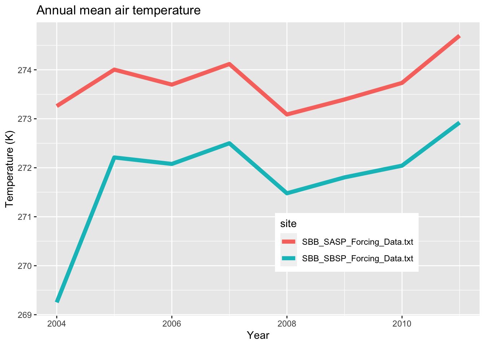

Chapter 4 Assignment 3: Snow Function Iteration
4.1 Simple web scraping
R can read html using either rvest, xml, or xml2 packages. Here we are going to navigate to the Center for Snow and Avalance Studies Website and read a table in. This table contains links to data we want to programatically download for three sites. We don’t know much about these sites, but they contain incredibly rich snow, temperature, and precip data.
4.2 Assignment:
- Extract the meteorological data URLs. Here we want you to use the
rvestpackage to get the URLs for theSASP forcingandSBSP_forcingmeteorological datasets.
site_url <- 'https://snowstudies.org/archived-data/'
#Read the web url
webpage <- read_html(site_url)
links <- webpage %>%
html_nodes('a') %>%
.[grepl('forcing',.)] %>%
html_attr('href')
links## [1] "https://snowstudies.org/wp-content/uploads/2022/02/SBB_SASP_Forcing_Data.txt"
## [2] "https://snowstudies.org/wp-content/uploads/2022/02/SBB_SBSP_Forcing_Data.txt"- Download the meteorological data. Use the
download_fileandstr_split_fixedcommands to download the data and save it in your data folder. You can use a for loop or a map function.
#Grab only the name of the file by splitting out on forward slashes
splits <- str_split_fixed(links,'/',8)
#Keep only the 8th column
dataset <- splits[,8]
#generate a file list for where the data goes
file_names <- paste0('data_snow/',dataset)
#for(i in 1:3){
# download.file(links[i],destfile=file_names[i])
#}
#downloaded <- file.exists(file_names)
#evaluate <- !all(downloaded)- Write a custom function to read in the data and append a site column to the data.
# this code grabs the variable names from the metadata pdf file
library(pdftools)## Using poppler version 20.12.1headers <- pdf_text('https://snowstudies.org/wp-content/uploads/2022/02/Serially-Complete-Metadata-text08.pdf') %>%
readr::read_lines(.) %>%
trimws(.) %>%
str_split_fixed(.,'\\.',2) %>%
.[,2] %>%
.[1:26] %>%
str_trim(side = "left")meteorological_reader<-function(file_names){
name=str_split_fixed(file_names,'/',2)[,2]
name2=str_split_fixed(file_names,'/',4)[,2]
df<-read.delim(file_names, header = F, sep = "", col.names = headers, skip = 4)%>%
select(1:14)%>%
mutate(site=name2)
}- Use the
mapfunction to read in both meteorological files. Display a summary of your tibble.
fulldata<-map_dfr(file_names, meteorological_reader)
unique(fulldata$site)## [1] "SBB_SASP_Forcing_Data.txt" "SBB_SBSP_Forcing_Data.txt"- Make a line plot of mean temp by year by site (using the
air temp [K]variable). Is there anything suspicious in the plot? Adjust your filtering if needed.
annual_mean<-fulldata%>%
group_by(site, year)%>%
summarize(mean_air_temp=mean(air.temp..K.))## `summarise()` has grouped output by 'site'. You can override using the `.groups` argument.ggplot(annual_mean, aes(x=year, y=mean_air_temp, color=site)) +
geom_line(size=2)+
labs(title="Annual mean air temperature",
x="Year",
y= "Temperature (K)")+
theme(legend.position = c(.7, .25))
2003 is much colder than the other years which is suspicious. When looking at the data we can see that the data starts in November so it is not a complete year of data and only includes two colder months.
annual_mean<-fulldata%>%
group_by(site, year)%>%
filter(year>2003)%>%
summarize(mean_air_temp=mean(air.temp..K.))## `summarise()` has grouped output by 'site'. You can override using the `.groups` argument.ggplot(annual_mean, aes(x=year, y=mean_air_temp, color=site)) +
geom_line(size=2)+
labs(title="Annual mean air temperature",
x="Year",
y= "Temperature (K)")+
theme(legend.position = c(.7, .25))- Write a function that makes line plots of monthly average temperature at each site for a given year. Use a for loop to make these plots for 2005 to 2010. Are monthly average temperatures at the Senator Beck Study Plot ever warmer than the Swamp Angel Study Plot? Hint: https://ggplot2.tidyverse.org/reference/print.ggplot.html
#monthly_mean<-fulldata%>%
# group_by(month, year, site)%>%
# summarize(monthly_air_temp = mean(air.temp..K.))
#ggplot(monthly_mean, aes(x = month, y = monthly_air_temp, color = site)) +
# facet_wrap(~year) +
# geom_line()
monthplot<-function(fulldata, year){
monthlytemp<-fulldata%>%
group_by(month, year, site)%>%
summarize(monthly_air_temp = mean(air.temp..K.))%>%
filter(yr == year)
plots<-ggplot(monthlytemp, aes(x = month, y = monthly_air_temp, color = site))+
geom_line(size=2)+
labs(title = monthlytemp$year,
x="Month",
y="Temperature (K)")
print(plots)
}
years<-c(2005, 2006, 2007, 2008, 2009, 2010)
for (yr in years){
monthplot(fulldata, year)
}